Over the years, discussions
about these varied versions of early Commodore games has come up
on COMP.SYS.CBM. I first discovered the differing versions like a
lot of you, which is accidently getting the awful MAX version of
"Wizard of Wor". Incidentally, if anyone has additional cartridges that I missed
or different versions than what I have found here, or has box or
label scans, I would appreciate your help in adding them to the
archive!
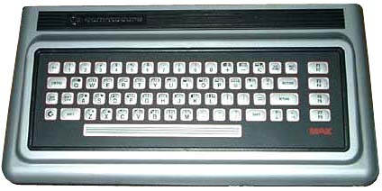
The ULTIMAX mode of the C64 is an emulation of the Japanese CBM release called the "MAX". It is a predecessor of the C64 with only 2K of RAM, a VIC-6566, and a membrane keyboard. It had no kernel or BASIC of it's own and everything had to be supplied on cartridges. Several of the games for this system (1982 vintage) were rereleased in the U.S. and elsewhere as C64 cartridges. They were developed (or at least published?) by HAL Labs of Japan. Since the machine was also missing a character ROM, it was supplied by the cartridge. In emulation, this appears in the memory map of the VIC as $F000-$F1FF, but to the C64, it shows up as $3000-31FF (if you don't fiddle with the VIC bits, as the MAX had the VIC always looking at Bank 4). Rather than go through the trouble of this part, you can just copy the area from $F000-F1FF down to $3000-31FF and it works fine.
These versions have been discovered from different game collections I've run across over the years, some from the web, and some that people have sent me that saw this page. They were compared using a hex editor and disassembled for more information where required. All MAX games I have found will play on a C64 with a custom loader that sets $01 correctly and copies the VIC character data down to $3000. You need to patch the program code to change the LDA #$E7/STA $01 to LDA #$E5/STA $01. This appears in every cartridge and of course kills the software emulation on a real 64 if you don't patch it.
Changes to this page:
4/24/2003 - Original publishing
4/25/2003 - Added Mole Attack, Money Wars, Max
Basic, Super Alien. Added 3rd version of Omega Race, and
clarified the version differences in Radar Rat Race with
disassembly.
4/26/2003 - Added Mini-Basic, and another earlier
version of Clowns.
1/24/2004 - Added a 3rd version of Wizard of Wor, the picture of the
MAX, and some corrections.
10/25/2004 - Moved site to the C64PP!
11/28/2008 - Added the (not so recently) discovered Bowling and Gorf MAX carts.
Special thanks to Mat Allen (Mayhem) for his input and additional versions he contributed!
There are 3 different versions of this that I have found so far. They first 2 are marked V.01 and V.02 respectively on the title screens and play identically. The code is very similar between them, but the offsets give away that it's definitely a reassembly from source. By shifting the code around, you can see that it has minimal changes. The third version, which I have dubbed V.03 is a completely different program and was likely redone for the C64 release. It is, however, still an ULTIMAX mode cartridge and should play on a real MAX.
Cart runs at $E000-FFFF.
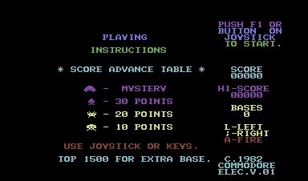
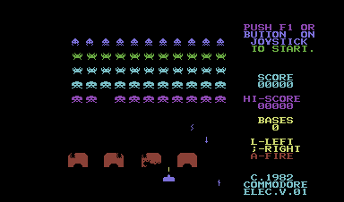
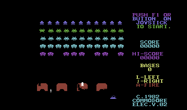
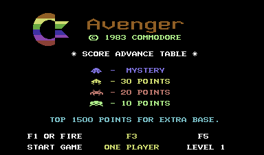
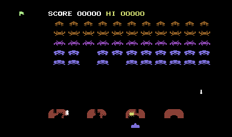
Two versions of this game have shown up. V.01 has been floating around on disk for decades, and V.02 has recently been dumped from an official cart. It's unknown what the gameplay differences are, but it's a reassembly and not a patch, as the code differs quite a bit between the two.
Cart runs at $E000-FFFF.
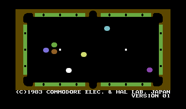
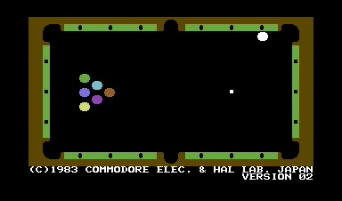
This cart was lost in time, as it was never released outside of Japan. Mayhem located a copy of it in the mid 2000's, and it's the only version that has been found.
Cart runs at $E000-FFFF.
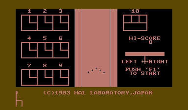
There's now 2 versions of this found. The second one is unmarked, but it's obvious from the code that it's a patched version of V.01, so I'll call it V.02. There are 3 patches to the code, of which the effect on gameplay is unknown. It's likely it was just to add the Bally/Midway copyright.
Cart runs at $E000-FFFF.
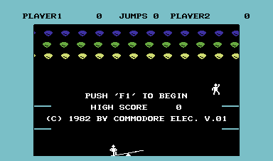
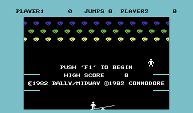
This cart was lost in time, as it was never released outside of Japan in the MAX format, and even then it may be a prototype. The game was completely rewritten for the release of the C64 in the US. A copy of this showed up in early 2008 from a user that sent it to Mayhem for dumping. Although it did have an official-looking MAX label, there were wires sticking out of it like a prototype, and this is the only one ever found. I've included screenshots of the rewritten C64 cart for comparison.
Cart runs at $E000-FFFF.
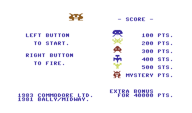
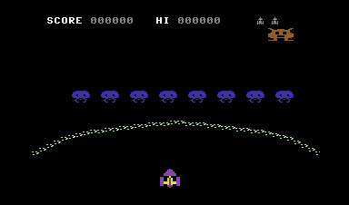
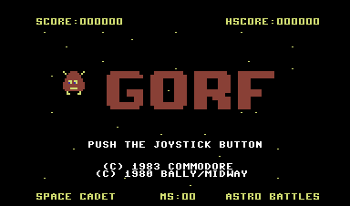
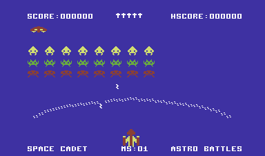
There are 2 versions of this floating around. The main difference is that one has a title screen and one does not. I'll call the one without the title screen version V.01 and the one with the title V.02. There are some text positioning and color differences between them as well, but I can't detect a difference in the gameplay. It is a series of patches and not a reassembly from source. During play, both versions are identical in color and gameplay. A fun note about this game is that is "borrows" the musical sequences from the 1980 Nichibitsu arcade game "Moon Cresta".
Cart runs at $E000-FFFF.
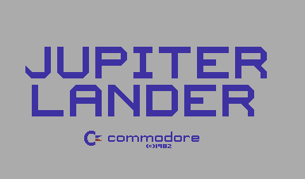
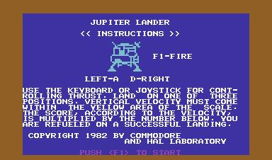
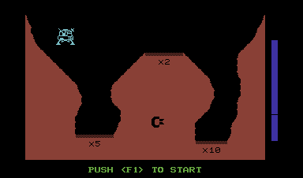
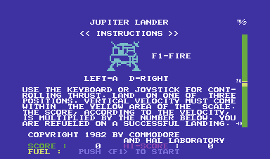
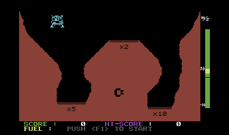
I have found 2 versions of this game, one version marked V.02 and another that's quite a bit different that I'll call V.03. The original V.02 version has slightly 'simpler' graphics and music and features a black background instead of white. Also, it plays completely different music. If someone has run across V.01, please send it to me for analysis. The later version is the C64 release with the Bally/Midway copyright
Cart runs at $E000-FFFF.
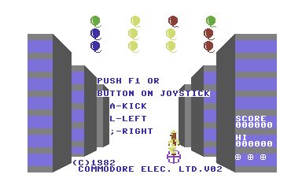
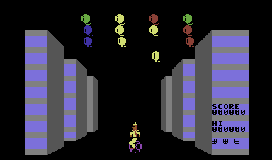
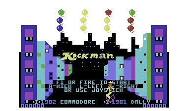
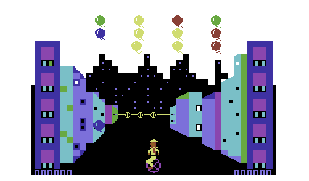
I have only found one version of this one so far. It is unmarked, so I'll call it V.01.
Cart runs at $E000-FFFF.
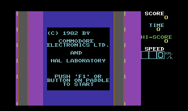
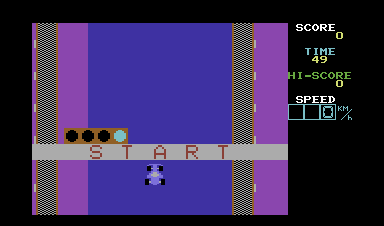
This one will not run in software MAX emulation on a real C64, but the actual cart probably does. The reason for this is that the cart itself had the 2K RAM underneath it's ROM, so it twiddles $01 constantly to accommodate this. This wouldn't be very useful on a real C64, anyway. ;)
Cart runs at $E000-FFFF and $8000-9FFF. (16k)
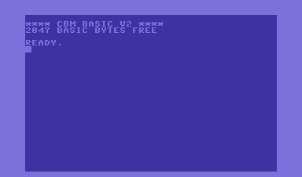
This one will run on a C64 in software-MAX mode, but again isn't real useful. Note from the screenshot that you get all of 510 bytes to work with (!).
Cart runs at $E000-FFFF.
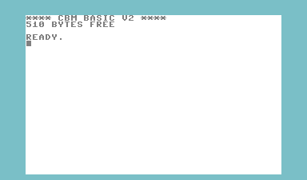
This one is marked V.01. I haven't seen another.
Cart runs at $E000-FFFF.
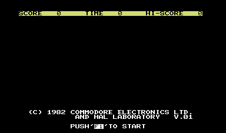
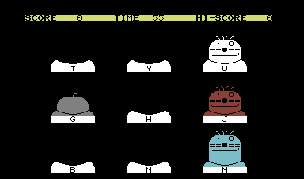
This one is marked V.01. I haven't seen another.
Cart runs at $E000-FFFF.
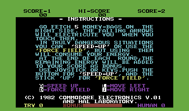
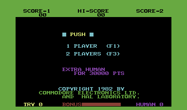
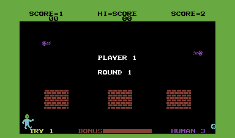
I have only found one version of this one so far. It is unmarked, so I'll call it V.01.
Cart runs at $F000-FFFF. Only 4K on this one...
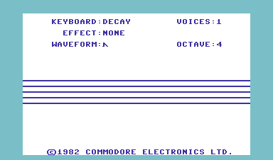
I have only found one version of this one so far. It is unmarked, so I'll call it V.01. This one is listed everywhere as "Music Composer" even though in the title screen it's identified as "Music Maker". It's also on CBM's part list as this wrong title, as well. Is there another version?
Cart runs at $E000-FFFF.
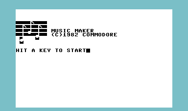
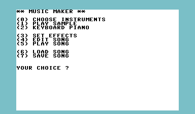
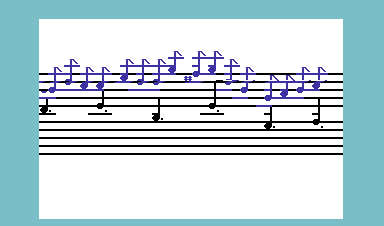
There are now 2 version of the MAX-oriented cartridge here, thanks to another variation sent to me. I don't know how to sequence these as far as dating, because they all 3 differ greatly. The one (that I had originally called V.01) looks to be more advanced than the V.02 that I was sent, since the latter has the plainer C64 character set and the less attractive white MAX-style background. This third variation is a C64 release of this that is NOT a MAX cart, as it runs in the usual C64 cartridge space of $8000-9FFF. I have put screenshots of the non-MAX version for comparison anyway. I have called the version that is marked V.02 (makes sense, eh?), the unmarked and more attractive-looking one V.03, and redubbed the C64 $8000 version V.04. These are all definately a reassembly and not just patches, and the 64 version plays differently. Also, look how the control keys have slightly changed between versions...
MAX carts run at $E000-FFFF, the C64 version at $8000-9FFF.
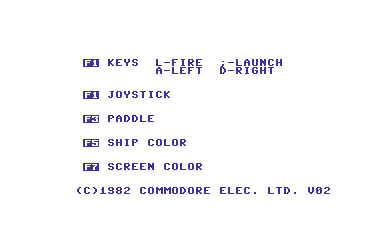
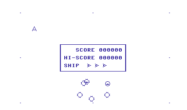
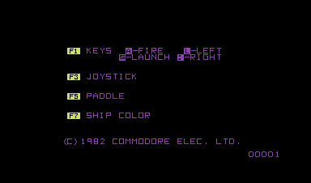
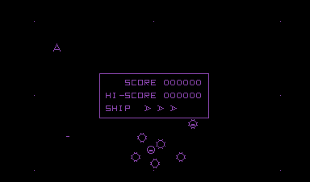
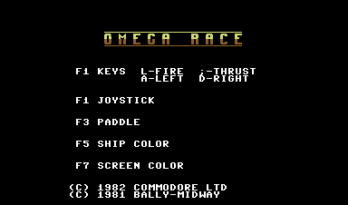
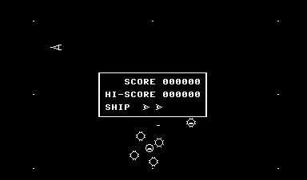
I have only found one version of this one so far. It is unmarked, so I'll call it V.01. It is somewhat unusual in that it is 12K, so it resides as not only the usual 8K MAX program at $E000-FFFF, but also another 4K chunk at $8000-8FFF.
Cart runs at $E000-FFFF, and $8000-8FFF.
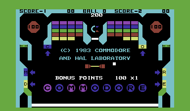
This is CBM's clone of Rally-X. This is a fun one because I've found several different versions of this game, but all of them are identified as V.02. For clarity, I'll call the one that has been verified to be an authentic MAX cart as revision V.02a and call the others V.02b and V.02c.
Version V.02a is the one that's verified to come from the Japanese release, and has the green graphics. Between 02a and 02b, some graphics have been changed to white, and from 02b to 02c there are patches that juggle the carry bit and accumulator during an INC and subsequent DEC to $FE01,X. On a real MAX, these won't have any effect, because this is not RAM, it's a cartridge ROM, so $FE01,X can't be changed. I guess they fixed the bug with this patch. My earlier observation that the initial cheese maps were different was incorrect. I'm still not positive what this code does. I've patched it so it changes the border color when it runs and it happens fairly often, but it isn't obvious what it corresponds to, but my gut instinct is that it has something to do with how your rat decides to change directions when you hit a wall and aren't operating it with the controls. I have omitted the screenshots to V.02c since they are identical to V.02b.
BTW, here is a disassembly of the changes from 02A/B to 02C...
dump 02A/B:
$e24b FE 01 FE INC $FE01,X
-
$e269 DE 01 FE DEC $FE01,X
dump 02C:
$e24b 20 80 FF JSR $FF80
-
$e269 20 87 FF JSR $FF87
$ff80 BD 01 FE LDA $FE01,X
$ff83 18
CLC
$ff84 69 01 ADC #$01
$ff86 60
RTS
-
$ff87 BD 01 FE LDA $FE01,X
$ff8a 38
SEC
$ff8b E9 01 SBC #$01
$ff8d 60
RTS
Cart runs at $E000-FFFF.
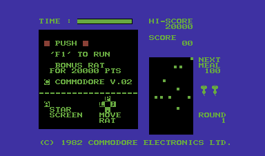
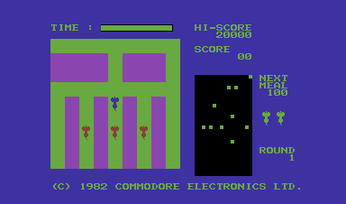
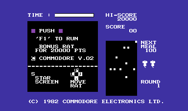
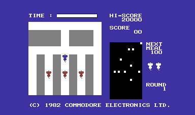
I have 2 versions of this, identified as V.01 and V.02. It is a reassembly from source with a patch in it. The only gameplay difference I can identify is that the engine makes a different noise. It has a lower rumbling sound in V.01 than V.02.
Cart runs at $E000-FFFF.
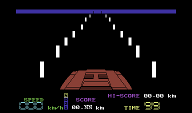
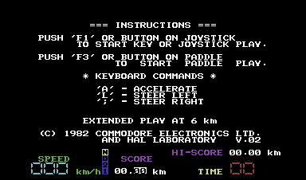
I have only run across one version of this game, and it's unmarked, so I'll call it V.01.
Cart runs at $E000-FFFF.
The only version found is V.02. Let me know if you run across V.01. It has great music for it's time and is an obvious clone of the Taito arcade game "Alpine Ski". This has an even stranger memory architecture than Pinball, as it uses the usual MAX area at $E000-FFFF, but also $8000-91FF. (Yes, that's an extra 512 bytes, and it uses the extra space for some of the text display, so it isn't a mistake.)
Cart runs at $E000-FFFF, and $8000-91FF. (12.12K)
I've only found one version of this game, marked V.01.
Cart runs at $E000-FFFF.
This one is marked V.01. I haven't seen another.
Cart runs at $E000-FFFF.
I've only found one version of this cart, and it's unmarked, so I'll call it V.01.
Cart runs at $E000-FFFF.
There are now 3 versions of this game uncovered- an unmarked version we'll call V.01, V.02, and the non-Ultimax C64 rerelease. The differences between V01/V02 are that you start off in a open-walled area and it has the Bally/Midway copyright. Since the Bally copyright versions are usually the C64 re-release, it's likely what I have marked as V01 here is later that V02. Both this version and the later remake were both released in the US. It is a reassembly from source code and not a patch. The C64 $8000 version was totally rewritten and shares none of the same code that I can see.
MAX cart runs at $E000-FFFF, C64 rerelease
runs at $8000-BFFF.